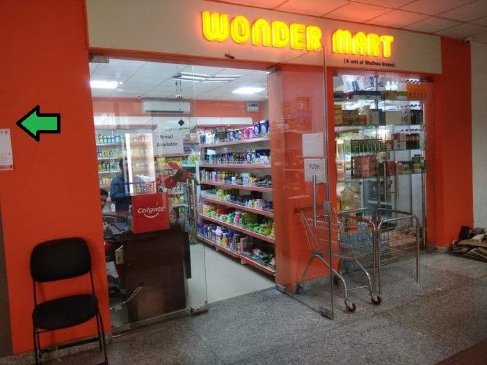

|  |
AboutWondermart is a unique, interactive audio tour that takes you on a journey of rediscovery through the familiar surroundings of the supermarket. Wearing headphones and anonymous behind your trolley, you are guided around the aisles immersed in a private soundscape. The real blurs with the imaginary, and the every day setting of the ‘high density retail environment’ becomes the scene of strange adventures |